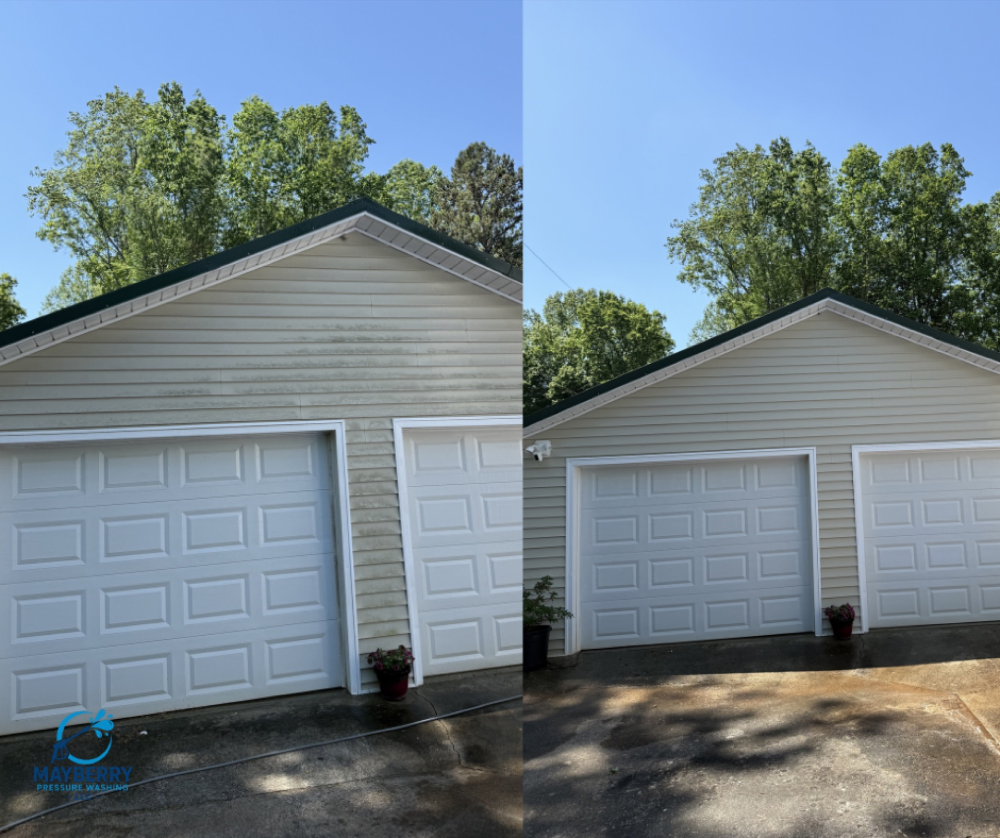
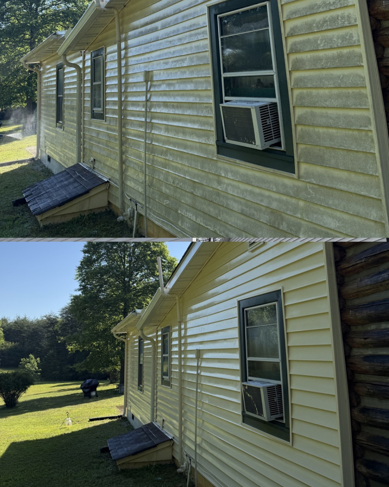
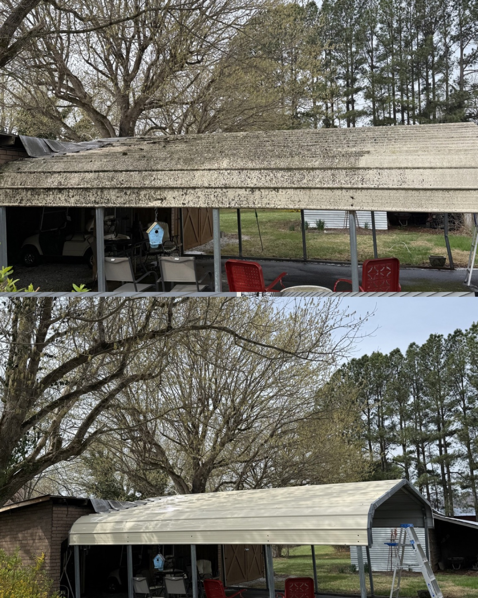
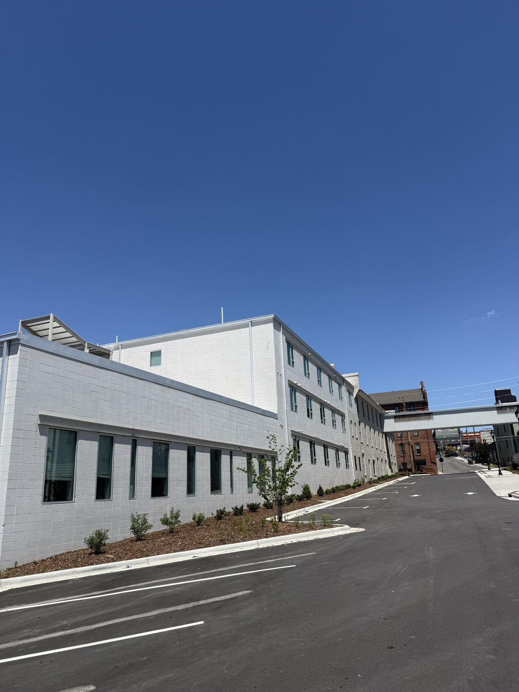
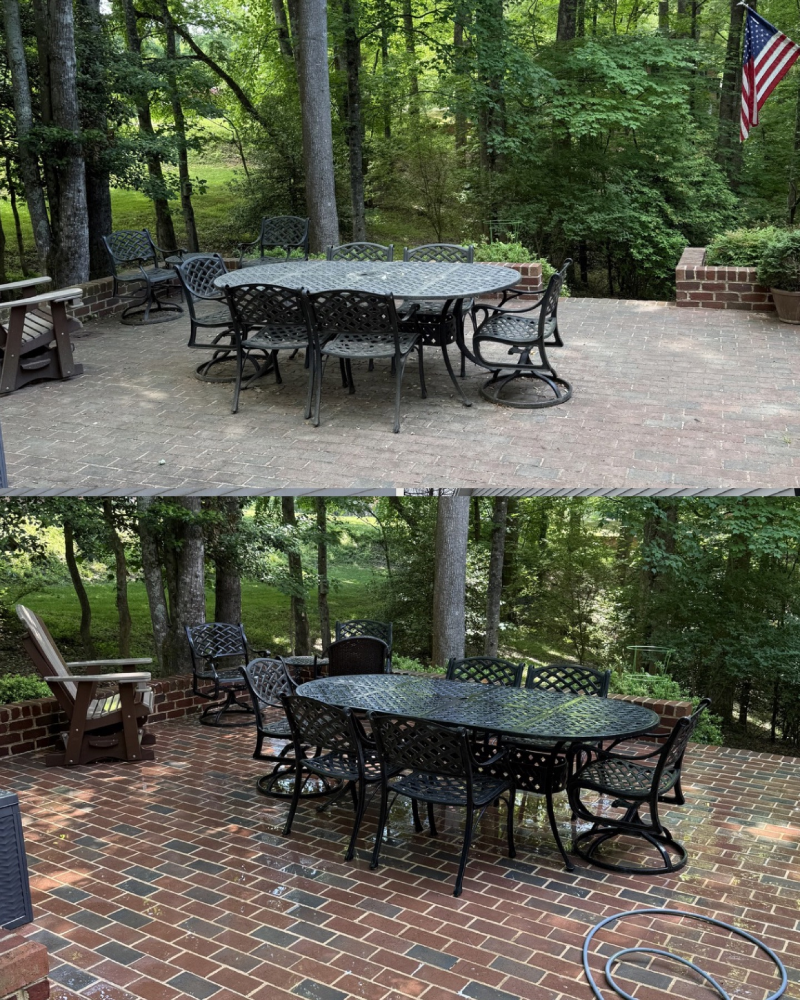
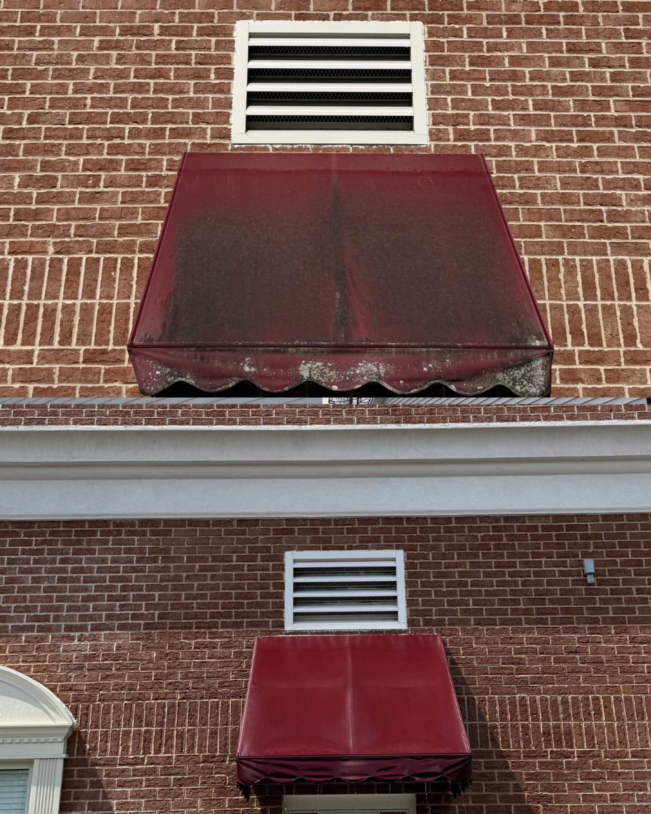

Deck rail before and after
Deck boards and railing cleaned to remove dark buildup and bring the outdoor space back to a brighter finish.
Exterior cleaning gallery
Browse house washing, commercial exterior cleaning, deck cleaning, concrete cleaning, pool deck cleaning, awning washing, and other before-and-after results.
Each photo below highlights a different surface Mayberry cleans, from siding and decks to concrete, awnings, fences, and larger commercial buildings.
Deck boards and railing cleaned to remove dark buildup and bring the outdoor space back to a brighter finish.

Light-colored siding and garage doors cleaned so the whole outbuilding looks sharper from the driveway.

Wood fencing cleaned along the property line, lifting surface grime and helping the rails look more even.

House siding cleaned with a surface-appropriate wash to clear staining around the walls, windows, and trim.

Overhang and covered structure cleaning that removes discoloration from high-visibility exterior areas.

Poolside concrete cleaned to cut through buildup and make the surrounding deck look brighter and safer.

Exterior siding cleaned across the wall face to restore curb appeal around the home and entry areas.

Covered deck staining work that refreshed the backyard entry and helped the outdoor space feel ready to use.

Lift-assisted exterior cleaning for a taller brick commercial property with access around sidewalks and storefront areas.

A larger commercial exterior cleaned across the facade, parking area, and high-traffic business frontage.

Business awning cleaned from dull and weathered to a brighter storefront detail customers notice.

Outdoor patio and entertaining space cleaned to remove surface buildup around seating areas.

Apartment or commercial awning cleaned to improve the look of the entry and brick exterior.

Concrete driveway cleaned with a clear before-and-after difference along the home and parking area.
Send a few project details and Mayberry can quote the right service.